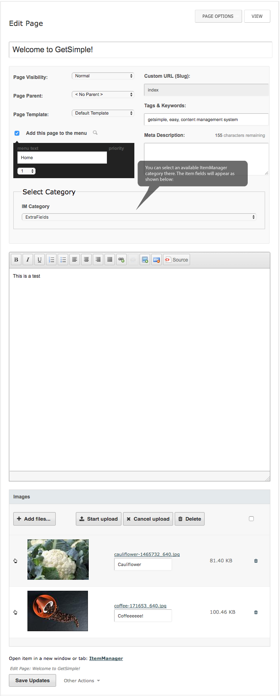
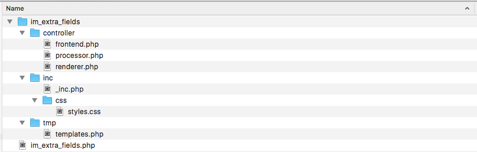

IM-Extra-Pages
IM-Extra-Pages is a new ItemManager 2.3.4 plugin - ItemManager offers since version 2.2.4 new features, that simplify the usage the plugin in combination with GetSimple native pages. The IM-Extra-Pages plugin allows creation a kind of a mix between I18N Custom Fields and Special Pages. For instance, it is possible to create a bunch of categories with different field properties, these can selected by end-user then, depending upon need. Here is an example of how to extend a simple index page by ItemManager's file field:

The IM-Extra-Pages plugin has a very simple structure and act more as an interface between ItemManager and GetSimple functionality.

{% highlight php %} $var = 'this is a test'; {% endhighlight %}